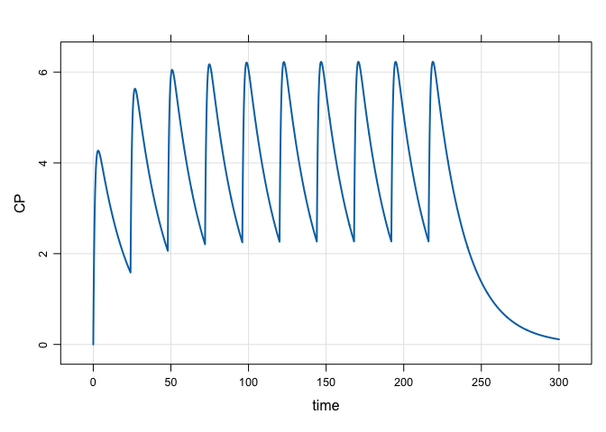
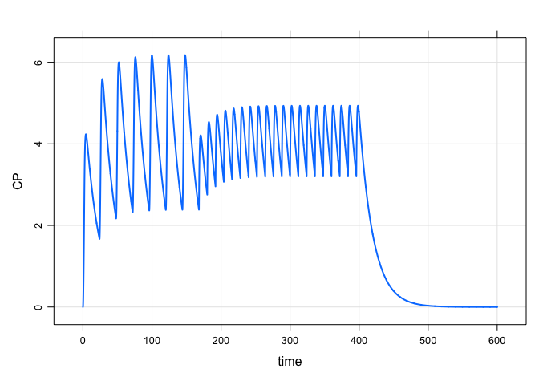
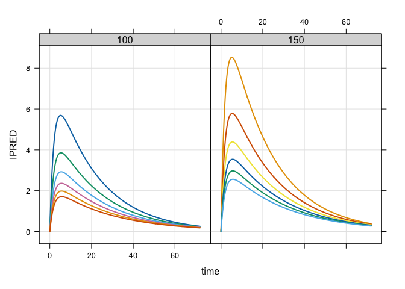
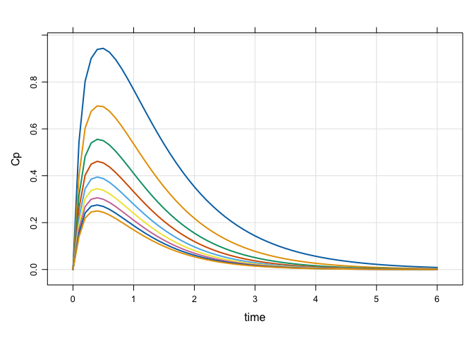

mrgsolve is an R package for simulation from hierarchical, ordinary differential equation (ODE) based models typically employed in drug development. mrgsolve is free and open-source software.
Resources
Please see mrgsolve.github.io for additional resources, including:
Installation
Install the latest release on CRAN
install.packages("mrgsolve")Please be sure to see important install-related information here.
Install the current development version
remotes::install_github("metrumresearchgroup/mrgsolve@develop")Interaction
We welcome questions about anything mrgsolve: installation, getting your model to work, understanding better how mrgsolve works. We also welcome suggestions for how to make mrgsolve more useful to you and to the pharmacometrics community.
Please interact with us at the Issue Tracker. This requires a GitHub account.
Some examples
A simple simulation
Load a model from the internal library
Simulate a simple regimen

A more complicated regimen: 100 mg infusions over 2 hours every 24 hours for one week, followed by 50 mg boluses every 12 hours for 10 days:
mod %>%
ev_rx("100 over 2h q 24 x 7 then 50 q 12 x 20") %>%
mrgsim(end = 600, delta = 0.1) %>%
plot(CP~time)
Population simulation
A data set looking at different patient weights and doses
library(dplyr)
data <- expand.ev(amt = c(100,150), WT = seq(40,140,20)) %>% mutate(dose = amt)
head(data). ID time amt cmt evid WT dose
. 1 1 0 100 1 1 40 100
. 2 2 0 150 1 1 40 150
. 3 3 0 100 1 1 60 100
. 4 4 0 150 1 1 60 150
. 5 5 0 100 1 1 80 100
. 6 6 0 150 1 1 80 150Simulate
mod %>%
data_set(data) %>%
carry_out(dose,WT) %>%
mrgsim(delta = 0.1, end = 72) %>%
plot(IPRED~time|factor(dose),scales = "same")
Sensitivity analysis with PBPK model
mod <- modlib("pbpk")Reference
Model file: pbpk.cpp
$PROB
# HUMAN PBPK MODEL
1: Jones H, Rowland-Yeo K. Basic concepts in physiologically based
pharmacokinetic modeling in drug discovery and development. CPT Pharmacometrics
Syst Pharmacol. 2013 Aug 14;2:e63. doi: 10.1038/psp.2013.41. PubMed PMID:
23945604; PubMed Central PMCID: PMC3828005.Model parameters
param(mod).
. Model parameters (N=52):
. name value . name value . name value
. BP 0.98 | fumic 1 | FVve 0.0514
. BW 70 | fup 0.681 | HLM_CLint 8
. CLrenal 0 | FVad 0.213 | Ka 2.18
. CO 108 | FVar 0.0257 | Kpad 0.191
. F 1 | FVbo 0.0856 | Kpbo 0.374
. FQad 0.05 | FVbr 0.02 | Kpbr 0.606
. FQbo 0.05 | FVgu 0.0171 | Kpgu 0.578
. FQbr 0.12 | FVhe 0.0047 | Kphe 0.583
. FQgu 0.146 | FVki 0.0044 | Kpki 0.597
. FQh 0.215 | FVli 0.021 | Kpli 0.57
. FQhe 0.04 | FVlu 0.0076 | Kplu 0.62
. FQki 0.19 | FVmu 0.4 | Kpmu 0.622
. FQlu 1 | FVpl 0.0424 | Kpre 0.6
. FQmu 0.17 | FVrb 0.0347 | Kpsk 0.6
. FQre 0.104 | FVre 0.0998 | Kpsp 0.591
. FQsk 0.05 | FVsk 0.0371 | Kpte 0.6
. FQsp 0.0172 | FVsp 0.0026 | . .
. FQte 0.0108 | FVte 0.01 | . .Set up a batch to simulate
idata <- expand.idata(Kpli = seq(4,20,2))
idata